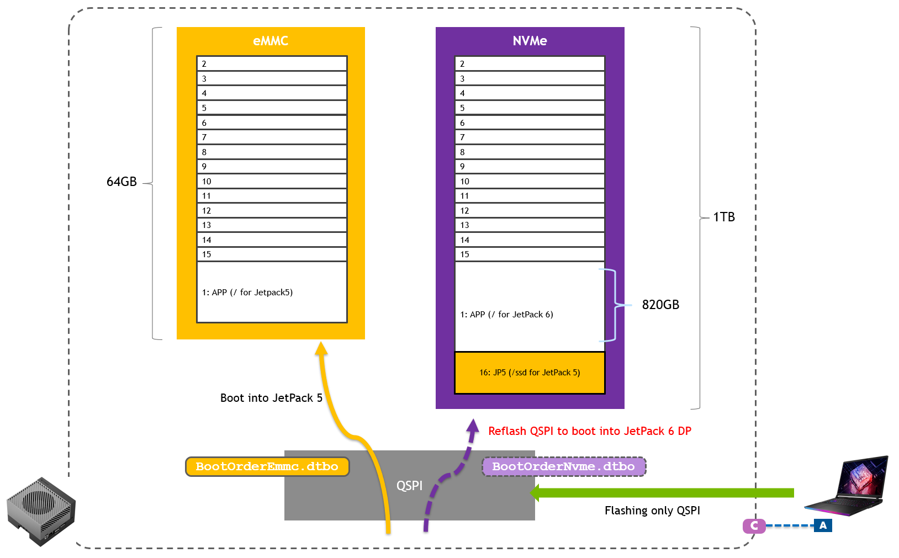
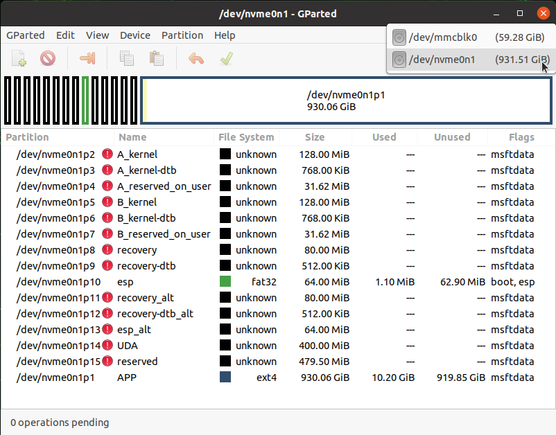
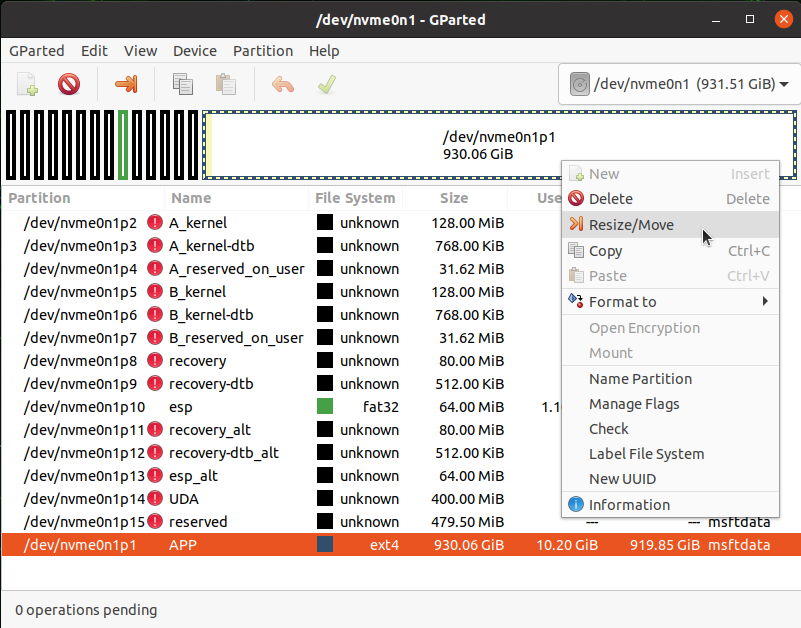
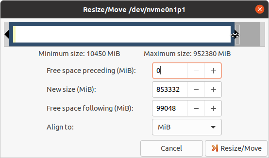
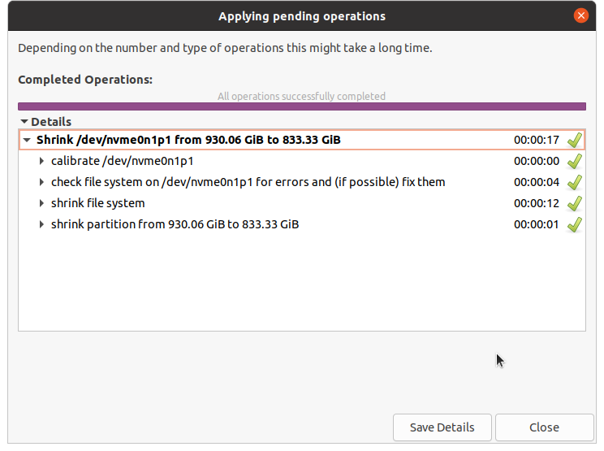
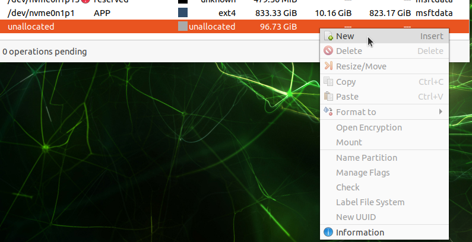
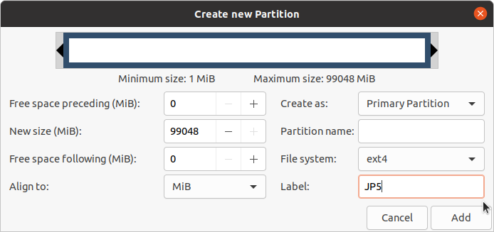
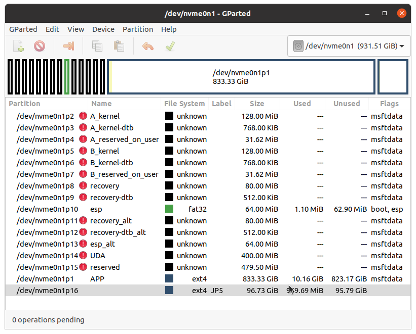

Jetson Setup
This page documents how the Jetson used in the lab was set up prior to the course by instructors.
People can reference this page to learn how their own Jetson can be set up in order to follow the contents of this course by their own.
Jetson hardware
For our course at the GTC 24, Jetson AGX Orin 64GB Developer Kit was used, partially because of the requirement of other courses that share the same lab room.
One could use other Orin generation Jetson, such as Jetson Orin Nano Developer Kit, however it has not been fully verified.
For learning what Jetson developer kits are available and the order information, please check the Jetson Developer Kits page on NVIDIA.com.
Install JetPack 5.1.2
For this hands-on course, we run Isaac ROS 2.1 (the most up-to-date at the time of GTC 24) on Jetson, which requires JetPack 5.1.2.
Jetson AGX Orin 64GB Developer Kit shall be flashed using a host Linux PC, following the steps below.
cd
mkdir L4T_r35.4.1
cd L4T_r35.4.1
wget https://developer.nvidia.com/downloads/embedded/l4t/r35_release_v4.1/release/jetson_linux_r35.4.1_aarch64.tbz2
wget https://developer.nvidia.com/downloads/embedded/l4t/r35_release_v4.1/release/tegra_linux_sample-root-filesystem_r35.4.1_aarch64.tbz2
tar xf jetson_linux_r35.4.1_aarch64.tbz2
sudo tar xpf tegra_linux_sample-root-filesystem_r35.4.1_aarch64.tbz2 -C Linux_for_Tegra/rootfs/
cd Linux_for_Tegra/
sudo ./apply_binaries.sh
sudo ./tools/l4t_flash_prerequisites.sh
sudo ./flash.sh jetson-agx-orin-devkit internal
Special "Dual boot" setup
Special case: Dual-boot with JetPack 6.0 DP
Depending on the event's / other labs' needs, you may need to have another version of JetPack on the different storage medium on Jetson, in order to realize a "dual-boot" setup.
We explain the additional instructions for such special setup using a folded adomonition like following.
Installing JetPack 6.0 DP on NVMe
After installing JetPack 5.1.2 on eMMC, you can perform the following to install JetPack 6.0 DP on NVMe.
cd ~/L4T_r36.2/Linux_for_Tegra
sudo ./nvsdkmanager_flash.sh --storage nvme0n1p1
This will re-write the contents on QSPI bootloader, so Jetson is configure to boot into JetPack 6.0 DP from NVMe, although the eMMC is left in tact with the JetPack 5.1.2 contents.
Populating the ~/L4T_r36.2/Linux_for_Tegra directory process is like following.
cd
mkdir L4T_r36.2
cd L4T_r36.2
wget https://developer.nvidia.com/downloads/embedded/l4t/r36_release_v2.0/release/jetson_linux_r36.2.0_aarch64.tbz2
wget https://developer.nvidia.com/downloads/embedded/l4t/r36_release_v2.0/release/tegra_linux_sample-root-filesystem_r36.2.0_aarch64.tbz2
tar xf jetson_linux_r36.2.0_aarch64.tbz2
sudo tar xpf tegra_linux_sample-root-filesystem_r36.2.0_aarch64.tbz2 -C Linux_for_Tegra/rootfs/
cd Linux_for_Tegra/
sudo ./apply_binaries.sh
sudo ./tools/l4t_flash_prerequisites.sh
In later section, we explain how to switch JetPack 5 (booting from eMMC) and JetPack 6 DP (booting from NVMe) by re-flashing QSPI NOR flash memory containing the bootloader and the DTB overlay, and how we can set up an additional partition on NVMe SSD for JetPack 5.

Re-flashing QSPI to switch between JP5 JP6
Switching between JP5 JP6
Once you have installed JetPack 5 on eMMC and JetPack 6 DP on NVMe, you can issue the following commands on the attached Linux PC to re-flash the QSPI to configure Jetson to boot into JetPack 5.
First, put Jetson into Forced Recovery mode by pressing Reset button (next to the LED) while holding Forced Recovery button (middle).
Caution
On the PC, make sure to download jetson-agx-orin-devkit-qspi.conf from here and save under Linux_for_Tegra directory first.
cd ~/L4T_r35.4.1/Linux_for_Tegra
sudo ADDITIONAL_DTB_OVERLAY="BootOrderEmmc.dtbo" ./flash.sh jetson-agx-orin-devkit-qspi mmcblk0p1
Flashing process will take about 8 minutes.
Once you have installed JetPack 5 on eMMC and JetPack 6 DP on NVMe, you can issue the following commands on the attached Linux PC to re-flash the QSPI to configure Jetson to boot into JetPack 6 DP.
First, put Jetson into Forced Recovery mode by pressing Reset button (next to the LED) while holding Forced Recovery button (middle).
cd ~/L4T_r36.2/Linux_for_Tegra
sudo ADDITIONAL_DTB_OVERLAY="BootOrderNvme.dtbo" ./flash.sh p3737-0000-p3701-0000-qspi nvme0n1p1
Flashing process will take about 8 minutes.
SSD setup
Follow this instruction on Isaac ROS Doc to auto-mount SSD and set up Docker directory on SSD.
Only when you have a special need to configure your Jetson to have a "dual boot" configuration with other version of JetPack like for the labs at GTC 24, follow the steps below.
Setting up an additional partition on existing NVMe
In case NVMe already populated by JetPack 6.0 DP
GParted
First install gparted.
sudo apt install -y gparted
Start gparted and select /dev/nvme0n1

Select the largest partition **APP**, and from the context menu select "Resize/Move"

Shrink the current APP partition to create about 99,000 MiB of free space, and hit Resize/Move button.

Back on the main window, press the green checkmark icon (✔) to start the partition resizing operation.
Click "Apply" on the confirmation dialog.
It takes 10-20 seconds and you will see the operation successfully completed like this.

Right-click on "unallocated" partition from the list and select "New" from the context menu.

Enter "JP5" or something in "Label" for easy identification, and click "Add".

Back on the main window, press the green checkmark icon (✔) to start the partition creation operation.
Click "Apply" on the confirmation dialog, and the operation should be completed in a second.

You should see the new /dev/nvme0n1p16 created in the list.

You can close gparted application.
Terminal operation
Once everything is done with GParted, open a new terminal to perform the following.
sudo mkfs.ext4 /dev/nvme0n1p16
sudo mkdir /ssd
sudo mount /dev/nvme0n1p16 /ssd
echo "/dev/nvme0n1p16 /ssd/ ext4 defaults 0 2" | sudo tee -a /etc/fstab
cat /etc/fstab
df -h
Make sure you see /dev/nvm0n1p16 of about 95GB mounted on /ssd.
Go through the rest of the Docker directory setup on this doc.
Remember
Isaac ROS setup
Official Isaac ROS Documentation - Computer Setup - Jetson Platforms
Install the whole JetPack (or only install docker and VPI?).
sudo apt update
sudo apt install -y nvidia-jetpack
Rest of the setup.
cat /etc/nv_tegra_release
sudo /usr/sbin/nvpmodel -m 0
sudo usermod -aG docker $USER
newgrp docker
# Add Docker's official GPG key:
sudo apt-get update
sudo apt-get install ca-certificates curl gnupg
sudo install -m 0755 -d /etc/apt/keyrings
curl -fsSL https://download.docker.com/linux/ubuntu/gpg | sudo gpg --dearmor -o /etc/apt/keyrings/docker.gpg
sudo chmod a+r /etc/apt/keyrings/docker.gpg
# Add the repository to Apt sources:
echo \
"deb [arch="$(dpkg --print-architecture)" signed-by=/etc/apt/keyrings/docker.gpg] https://download.docker.com/linux/ubuntu \
"$(. /etc/os-release && echo "$VERSION_CODENAME")" stable" | \
sudo tee /etc/apt/sources.list.d/docker.list > /dev/null
sudo apt-get update
sudo apt install docker-buildx-plugin
Isaac ROS container image pull and build.
sudo systemctl daemon-reload && sudo systemctl restart docker
sudo apt-get install git-lfs
git lfs install --skip-repo
mkdir -p /ssd/workspaces/isaac_ros-dev/src
echo "export ISAAC_ROS_WS=/ssd/workspaces/isaac_ros-dev/" >> ~/.bashrc
source ~/.bashrc
cd ${ISAAC_ROS_WS}/src
mkdir src
git clone https://github.com/NVIDIA-ISAAC-ROS/isaac_ros_common.git
cd ${ISAAC_ROS_WS}/src/isaac_ros_common
./scripts/run_dev.sh ${ISAAC_ROS_WS}
Nvblox setup
Official Isaac ROS Documentation - isaac_ros_nvblox - Quickstart
cd ${ISAAC_ROS_WS}/src
git clone --recurse-submodules https://github.com/NVIDIA-ISAAC-ROS/isaac_ros_nvblox.git && \
cd isaac_ros_nvblox && git lfs pull
cd ${ISAAC_ROS_WS}/src/isaac_ros_nvblox && \
git lfs pull -X "" -I "nvblox_ros/test/test_cases/rosbags/nvblox_pol"
cd ${ISAAC_ROS_WS}/src/isaac_ros_common && \
./scripts/run_dev.sh ${ISAAC_ROS_WS}
Inside the container,
cd /workspaces/isaac_ros-dev/ && \
rosdep install -i -r --from-paths src --rosdistro humble -y --skip-keys "libopencv-dev libopencv-contrib-dev libopencv-imgproc-dev python-opencv python3-opencv nvblox"
cd /workspaces/isaac_ros-dev && \
colcon build --symlink-install && \
source install/setup.bash
Docker container image mod and swap
Clone JetPack 5.1.2
Capturing the image
First, connect the source (original) Jetson unit to the Linux PC and put Jetson into Forced Recovery mode.
Issue the following to extract the APP partition image and save it as gtc-jp5.img on your PC.
sudo ./flash.sh -r -k APP -G gtc-jp5.img jetson-agx-orin-devkit mmcblk0p1
Attention
In case you ended up having an empty gtc-jp5.img file:
$ ls -lh gtc-0311-jp5.img
-rwxr-xr-x 1 root root 0 Mar 11 14:14 gtc-0311-jp5.img
Here is a work-around to convert the .img.raw file to .img file.
cp gtc-0311-jp5.img.raw system2.img.raw
losetup -f system2.img.raw
losetup
sudo resize2fs /dev/loop16 55G
sudo truncate system2.img.raw --size 59055800320
sudo apt install img2simg
sudo img2simg system2.img.raw gtc-0311-jp5.img
ls -lh gtc-0311-jp5.img
rm system2.img.raw
Flashing with the image
Info
If you are using a new PC to set for flashing, go through the follwoings.
cd
mkdir L4T_r35.4.1
cd L4T_r35.4.1
wget https://developer.nvidia.com/downloads/embedded/l4t/r35_release_v4.1/release/jetson_linux_r35.4.1_aarch64.tbz2
wget https://developer.nvidia.com/downloads/embedded/l4t/r35_release_v4.1/release/tegra_linux_sample-root-filesystem_r35.4.1_aarch64.tbz2
tar xf jetson_linux_r35.4.1_aarch64.tbz2
sudo tar xpf tegra_linux_sample-root-filesystem_r35.4.1_aarch64.tbz2 -C Linux_for_Tegra/rootfs/
cd Linux_for_Tegra/
sudo ./apply_binaries.sh
sudo ./tools/l4t_flash_prerequisites.sh
And copy the following files from the PC used to capture the image.
gtc-jp5.imgbootloader/esp.img
scp nnnn@10.110.50.120:/home/nnnn/L4T_r35.4.1/Linux_for_Tegra/gtc-jp5.img ./
scp nnnn@10.110.50.120:/home/nnnn/L4T_r35.4.1/Linux_for_Tegra/bootloader/esp.img ./bootloader
Before flashing a new unit using this image, edit ./bootloader/t186ref/cfg/flash_t234_qspi_sdmmc.xml so that APP section has <allocation_attribute> to be 0x808 instead of the original 0x8.
The APP section should look like the following:
<partition name="APP" id="1" type="data">
<allocation_policy> sequential </allocation_policy>
<filesystem_type> basic </filesystem_type>
<size> APPSIZE </size>
<file_system_attribute> 0 </file_system_attribute>
<allocation_attribute> 0x808 </allocation_attribute>
<align_boundary> 16384 </align_boundary>
<percent_reserved> 0 </percent_reserved>
<unique_guid> APPUUID </unique_guid>
<filename> APPFILE </filename>
<description> **Required.** Contains the rootfs. This partition must be assigned
the "1" for id as it is physically put to the end of the device, so that it
can be accessed as the fixed known special device `/dev/mmcblk0p1`. </description>
</partition>
Then connect the target unit to Linux PC, put it into Forced Recovery mode to flash the Jetson with your image.
sudo cp gtc-jp5.img bootloader/system.img
sudo ADDITIONAL_DTB_OVERLAY="BootOrderEmmc.dtbo" ./flash.sh -r jetson-agx-orin-devkit mmcblk0p1
Jetson misc setup
Stop auto screen blanking
gsettings set org.gnome.desktop.session idle-delay 0
After that you can double-check on GUI by going "Settings" > "Power" > "Power Saving Options" to check "Screen Black" to have been set to "Never".